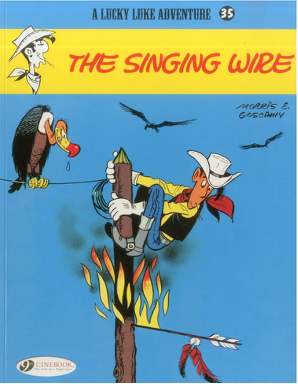
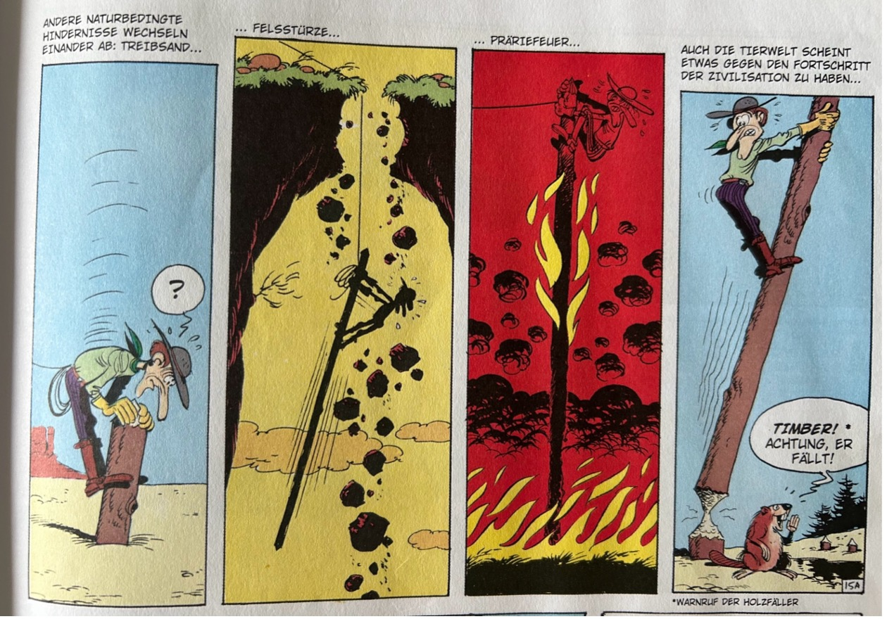
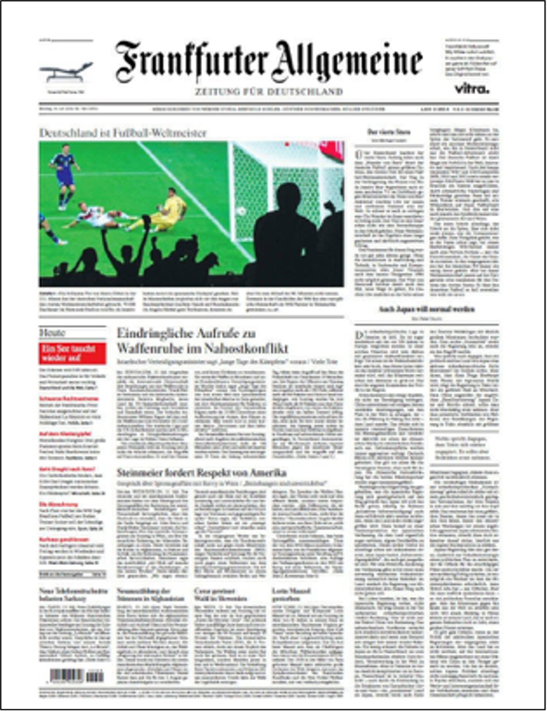
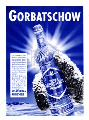
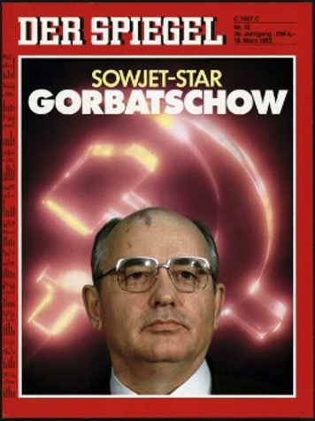
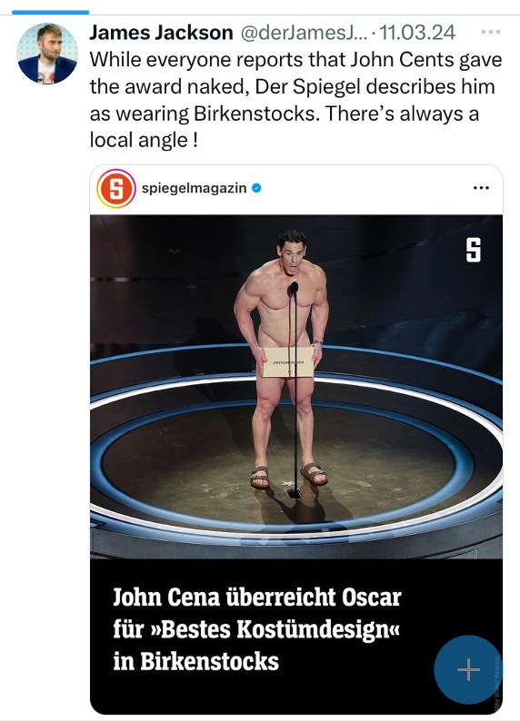

Die umgekehrte Pyramide
nach Marinos (2021, S. 10)
Das Pyramidenprinzip im deutschen Journalismus seit 1924
Es gibt zwei Arten, die Dinge zu erzählen: Von Anfang bis Ende oder direkt vom Ende her. Die kurze Textmessage an die beste Freundin wird ganz sicher lauten: „Wir haben uns geküsst!" Das ist die zentrale Botschaft. Und so funktioniert auch die journalistische Nachricht.
Sie stellt die wichtigste Information ganz nach vorne, in den „summary lead". Diese Form entstand Ende des 19. Jahrhunderts im US-amerikanischen Journalismus. Als Erklärung dienten zunächst die unsicheren Telegrafenleitungen — das Wichtigste gleich zu Beginn, falls die Leitung zusammenbrach.
Das Wichtigste zuerst: Der „Summary Lead" funktioniert auch im Chat.
Mit dieser Erfindung war es die Aufgabe des Journalismus, zu entscheiden, was das Wichtigste sei. Nicht mehr die Mächtigen erklären, was wichtig ist, sondern Journalist:innen übernehmen dies für die Bürger:innen. Eine demokratische Idee in ihrer besten Form.


Lucky Luke am Telegraf: Im Amerikanischen Bürgerkrieg entstand unter dem Druck unsicherer Leitungen das Prinzip „Das Wichtigste zuerst".



Carl N. Warrens Standardwerk (1934) — das erste deutschsprachige Lehrbuch, das das Pyramidenprinzip systematisch vermittelte.
Die amerikanischen Journalismusforscher Kevin Barnhurst und John Nerone haben beobachtet, dass „the capacity to change news design had been available for quite some time, but journalists considered the existing form of news fully functional." Es hat also keinen Anlass für Veränderungen gegeben — bis ins Zeitalter der Digitalisierung.
Unsere Forschung hat über 8.500 Artikel aus den wichtigsten deutschen Zeitungen über 100 Jahre analysiert — von der Weimarer Republik über den Nationalsozialismus, die Teilung Deutschlands bis zur Wiedervereinigung und Digitalisierung. Das Ergebnis: Das Pyramidenprinzip lag zumeist über 40 Prozent.
Und es waren nicht etwa die Nationalsozialisten oder die DDR-Führung, welche den Journalismus deformierten — es sind die mit der Digitalisierung einhergehenden Veränderungen, die das Pyramidenprinzip herausfordern.


Berliner Zeitung 1924 und heute: Das Pyramidenprinzip ist in beiden Epochen erkennbar — W-Fragen-Lead, abnehmende Wichtigkeit der Absätze.
Die Stabilität der Pyramide war auch eng verbunden mit dem Finanzierungsmodell: zwei Drittel Anzeigenerlöse, ein Drittel Verkaufserlöse. Vereinfacht gesagt, finanzierte in den 1980er Jahren eine Anzeige für Wodka Gorbatschow die Berichterstattung über Michail Gorbatschow.
Als das Internet kam, wanderte ein erheblicher Teil des gesamten Anzeigenvolumens ins Netz. Nachrichten waren lange völlig kostenlos verfügbar. Die Verlage suchen nach wie vor nach Refinanzierungsmodellen: Paywalls, Freemium, Metered-Modelle.
Neue Formen des Storytellings und neue Bezahlmodelle erklären, warum das Beantworten der W-Fragen am Beginn abnimmt. Clickbait, SEO-Optimierung und die Ökonomie der Aufmerksamkeit verändern das Nachrichtenschreiben fundamental.
Nicht alle Ereignisse werden zu Nachrichten. Was als berichtenswert gilt, beschrieben Galtung und Ruge 1965 in ihren zwölf Nachrichtenfaktoren. Doch Walter Lippmann warnte schon 1922: Nachrichten und Wahrheit sind nicht dasselbe. Die Medien konstruieren Realität — und das Internet verändert die Regeln der Konstruktion fundamental.


Links: Werbung für Wodka Gorbatschow. Rechts: SPIEGEL-Titel 1985. Die Anzeige finanzierte die Berichterstattung.
Canavilhas schlug 2006 vor, die Pyramide umzulegen — vom linearen Text zum vernetzten Hypertext. Trillo-Domínguez geht noch weiter: Die Nachricht wird zum multidimensionalen Rubik-Würfel, in dem Nutzer:innen selbst entscheiden, welchen Pfad sie durch die Information nehmen.
Um zu verstehen, wie Journalist:innen die Pyramide tatsächlich nutzen, wurden 15 Journalist:innen aus drei Generationskohorten befragt. Von Pensionär:innen, die noch mit der Schreibmaschine anfingen, über mittelalte Journalist:innen, die die digitale Transformation erlebten, bis zu jungen Redakteur:innen, für die Social Media Normalität ist.

Marinos spricht davon, Meldungen „anzufeaturen" — der Pyramide ein Sahnehäubchen aufzusetzen. Die Form wird flexibler, aber das Prinzip bleibt.
Der Rückgang des Pyramidenprinzips von etwa 40–50 % auf 30–35 % ist kein Verschwinden, sondern eine Transformation. Neue Erzählformen und neue Geschäftsmodelle erklären den Wandel. Doch paradoxerweise profitiert die Pyramide auch vom Internet: Google liest Überschriften nur bis zum 60. Zeichen (Liesem, 2015). Die klare Struktur — die wichtigsten Informationen zuerst — bleibt eine SEO-freundliche Praktik.
Noch wichtiger: Die demokratische Funktion der Pyramide ist ungebrochen. In einer Welt von Überfülle und Desinformation braucht es Journalist:innen, die das Wesentliche herausfiltern, strukturiert darstellen und damit Bürger:innen befähigen, informierte Entscheidungen zu treffen.
„Der Journalismus, dessen Kerntextsorte die Nachricht ist, wird weiterhin für diese Form der Informationsübermittlung von der Gesellschaft benötigt — sich zugleich aber stets weiterentwickeln muss." (Weischenberg, 2001)